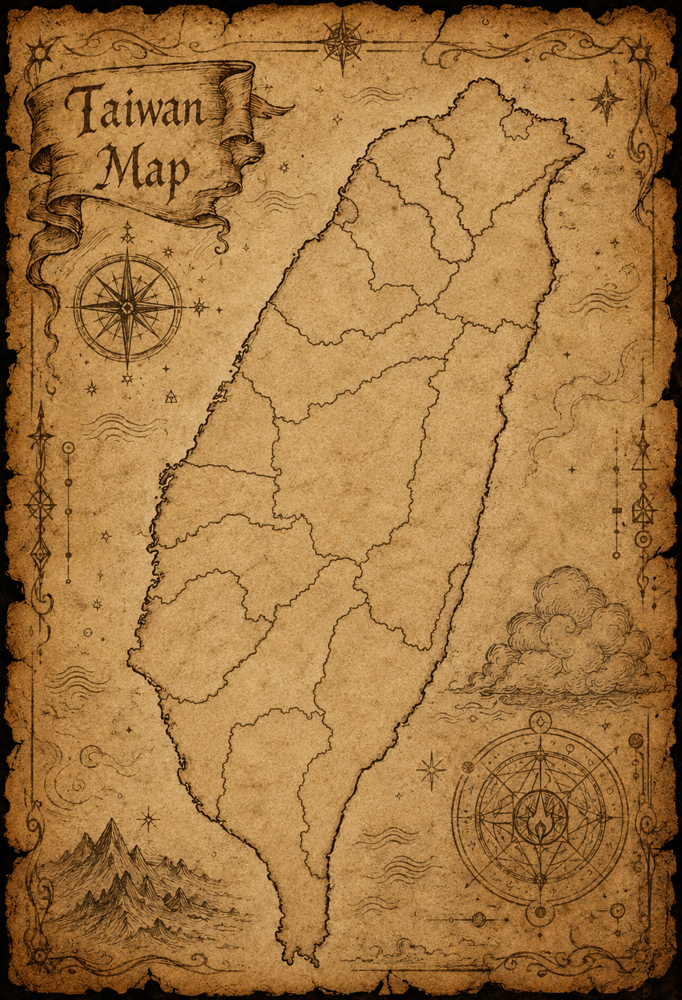

Taiwan Wizard's Table
Tracks
巫師們的足跡散落於台灣各地。
有些地方已被金色光點記錄，有些地方仍等待第一頁故事被寫下。
Recorded Footprint
★
Major Gathering
✧
Unwritten Page

Common Room2026.5.30 First Gathering
2026.3.21 Second Gathering
2026.10.24 Keelung
No Record Yet New Taipei
No Record Yet Taoyuan
No Record Yet Hsinchu City
No Record Yet Hsinchu County
No Record Yet Yilan
No Record Yet Miaoli
No Record Yet Taichung
No Record Yet Changhua
No Record Yet Nantou
No Record Yet Yunlin
No Record Yet Chiayi City
No Record Yet Chiayi County
No Record Yet Kaohsiung
No Record Yet Pingtung
No Record Yet Hualien
No Record Yet Taitung
No Record Yet Penghu
No Record Yet Kinmen
No Record Yet Lienchiang
No Record Yet